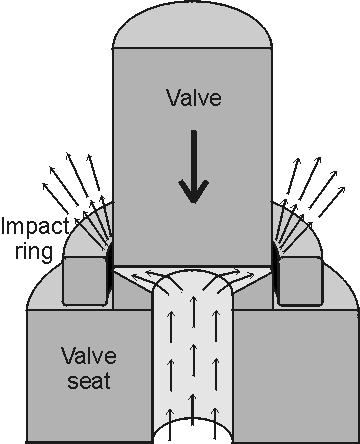
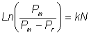

Enzyme Technology
High pressure homogenisers
Various types of high pressure homogeniser are available for
use in the food and chemicals industries but the design which has been very
extensively used for cell disruption is the Manton-Gaulin APV type homogeniser.
This consists of a positive displacement pump which draws cell suspension (about
12% w/v) through a check valve into the pump cylinder and forces it, at high
pressures of up to 150 MPa (10 tons per square inch) and flow rates of up to
10,000 L hr−1, through an adjustable discharge valve which has a
restricted orifice (Figure 2.5). Cells are subjected to impact, shear and a
severe pressure drop across the valve but the precise mechanism of cell
disruption is not clear. The main disruptive factor is the pressure applied and
consequent pressure drop across the valve. This causes the impact and shear
stress which are proportional to the operating pressure.

Figure 2.5. A cross-section through the Manton-Gaulin homogeniser valve, showing the flow of material. The cell
suspension is pumped at high pressure through the valve impinging on it and the
impact ring. The shape of the exit nozzle from the valve seat varies between
models and appears to be a critical determinant of the homogenisation
efficiency. The model depicted is the 'CD Valve' from APV Gaulin.
As narrow orifices which are vulnerable to blockage are key parts
of this type of homogeniser, it is unsuitable for the disruption of mycelial
organisms but has been used extensively for the disruption of unicellular
organisms. The release of proteins can be described by Equation 2.9 but normally
a similar relationship is used where the time variable is replaced by the number
of passes (N) through the homogeniser.

(2.10)
In the
commonly-used operating range with pressures below about 75 MPa, the release
constant (k) has been found to be proportional to the pressure raised to an
exponent dependent on the organism and its growth history (e.g., k=k'P2.9 in Saccharomyces cerevesiae
and k=k'P2.2 in Escherichia coli,
where P represents the operating pressure and k' is a rate constant). Different
growth media may be selected to give rise to cells of different cell wall
strength. Clearly, the higher the operating pressure, the more efficient is the
disruption process. The protein release rate constant (k) is temperature
dependent, disruption being more rapid at higher temperatures. In practice, this
advantage cannot be used since the temperature rise due to adiabatic compression
is very significant so samples must be pre-cooled and cooled again between
multiple passes. At an operating pressure of 50 MPa, the temperature rise each
pass is about 12 deg. C.
In addition to the fragility of the cells, the
location of an enzyme within the cells can influence the conditions of use of an
homogeniser. Unbound intracellular enzymes may be released by a single pass
whereas membrane bound enzymes require several passes for reasonable yields to
be obtained. Multiple passes are undesirable because, of course, they decrease
the throughput productivity rate and because the further passage of already
broken cells results in fine debris which is excessively difficult to remove
further downstream. Consequently, homogenisers will be used at the highest
pressures compatible with the reliability and safety of the equipment and the
temperature stability of the enzyme(s) released. High pressure homogenisers are
acceptably good for the disruption of unicellular organisms provided the enzymes
needed are not heat labile. The shear forces produced are not capable of
damaging enzymes free in solution. The valve unit is prone to erosion and must
be precision made and well maintained.
Home
| Back | Next
This page was established in 2004 and last updated by Martin
Chaplin
on
6 August, 2014
|